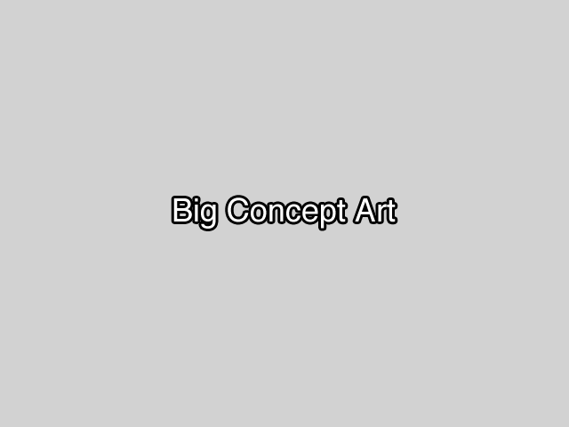

Table of Contents

The description document lays out the high level look and feel of a cast member. I chose the Thrall for two reasons: first, being humanoid, it makes him both easy and hard to describe as everyone “knows” what a human looks like, so you have to overcome their biases; and second, he has several sub-types, so I wanted to show that, at least for this document, that does not matter. You are mostly selling the LOOK not the FUNCTION, so the fact that you have several sub types does not matter, and going into all that kind of minute detail will muddy the clear message of what they should look like.
Look at it this way, if you have trouble fitting the visual descriptions of two sub types into this document, then you do not have a new subtype, you have a new type all together. Remember: if something is functionally distinct, then it should be visually distinct, unless your intent is to confuse the player (it’s not, is it?)
This lays out the cheat-sheet level info for your cast member. Depending on the style and kind of game you are making, this can include other information that is more statistical and less descriptive; as long as it deals with the form. Function goes somewhere else.
The history, mythos, and general backstory for the cast member. Flavor is welcome here. Try not to get bogged down with function, though, unless it emphasizes the form.
Thralls are humans who have become slaves to the Fae. Prolonged enslaved and interaction with the Fae realm, especially to the more powerful denizens, has a twisting effect on both the mind and the body. Most thralls, therefore, are no more than shells, bent fully to the will of whatever Fae got their claws into them. The ones that are not driven mad, given enough time, begin to change and become more like Summer or Winter, depending on which side they were bent.
Define the general look of the cast member. What does the armor look like, what kind of accessories do they wear, how tall are they in comparison to the hero
Thralls are not zombies, and they are not the undead, but they will share a lot in common visually. They are men, alive, but they are savage to the point of disarray, and their minds are so destroyed that they no longer feel pain, which leaves most of them with bloody festering wounds. They have gaunt faces, ripped clothing, and miss-matched armor. These humans are nothing more than guard dogs to the Fae, and they are treated as such. They are fed scraps and kept feral.
The longer a human stays ensorcelled by a Fae the more they begin to take on the attributes of their specific house. Winter Thralls, for example, will be covered in frost, and their eyes will turn blue.
Describe how the cast member stands and presents themselves. If you can find pictures, use them. Better yet, if you can find animations, show them.
Hunched and very aggressive. These humans are almost feral in nature, driven mad by the Fae.
They lope everywhere they go, and they can never sit still. Even when standing idle, they are in constant pain, as their minds have been crushed. They act like a mental patient that is hearing voices (that’s because they are).
Describe any defining items they use, and if you have subtypes for this cast member, then describe how their equipment differs between sub types.
They are clothed and equipped like barbarians, but their equipment changes slightly based on their sub type. Thralls are broken into three equipment types: standard, archer, and handler.
Fur armor. Rusty sword and a small buckler.
Similar armor to the standard versions, but carrying a bow with arrows.
Leather armor instead of fur armor, and instead of a buckler they carry two swords. One in each hand.
Kind of effects the cast member uses, fire, electrical, aura, etc…
Thralls have two major subtypes when it comes to effects: normals thralls, and winter thralls. Winter thralls have spent more time with the Fae, and have been twisted by them far more than other thralls. Consequently, they are shrouded in a thin layer of frost, and their eyes burn brightly blue.
All winter style enemies have a similar effect, known as Winter Armor, which is the same across the entire game. If the player attacks something with Winter Armor and attempts a highly damaging attack, enemies with Winter Armor will react by being completely covered in a hard shell of ice, which protects them from all subsequent attacks. Think Iceman.
Kind of sounds the cast member makes from taunts to reactions to attack.
Idle
Taunts
Hit
Death
Pictures, movies, comic books, etc..
Pictures, movies, comic books, etc..